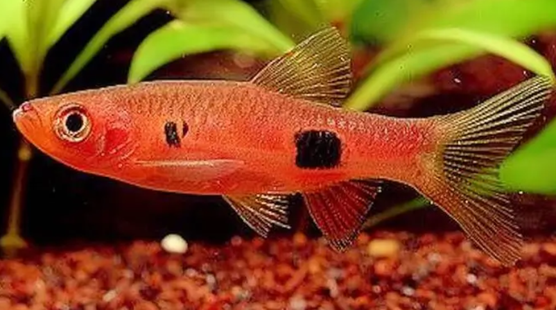

Systématique
- Ordre : Cypriniformes
- Famille : Danionidae
- Genre : Rasbora
- Espèce : R. kalochroma

Rasbora kalochroma, communément appelé Rasbora clown, est un cyprinidé de taille moyenne originaire d'Asie du Sud-Est, décrit par Bleeker en 1851.
Il mesure adulte entre 8 et 10 cm, ce qui en fait l'un des plus grands représentants communs du genre Rasbora en aquarium. Il se distingue par sa robe rouge orangé intense (chez les sujets bien acclimatés) ornée de deux taches noires caractéristiques : une au milieu du flanc et une autre juste au-dessus de la nageoire anale.
C'est une espèce spectaculaire mais réputée délicate, car elle provient de milieux très spécifiques (eaux noires acides) et supporte mal les variations brutales de paramètres.
C'est un poisson grégaire, vif et nerveux, qui doit être maintenu en banc d'au moins 8 à 10 individus. En raison de sa taille et de sa vivacité, il nécessite un grand espace de nage.
Bien que pacifique, sa taille et sa rapidité peuvent intimider les espèces trop petites ou timides (comme les petits Boraras ou crevettes juvéniles). Il occupe la zone médiane et supérieure de l'aquarium. Il est un excellent sauteur, le bac doit donc être hermétiquement couvert.
Mode : ovipare (diffuseur d'œufs).
La reproduction est considérée comme difficile en captivité. Elle nécessite une eau très douce (GH < 2) et très acide (pH 5.0 - 6.0), souvent filtrée sur tourbe pour simuler l'eau noire.
Les parents dispersent leurs œufs parmi les plantes fines (mousse de Java) et n'en prennent pas soin. Ils sont même enclins à dévorer leur ponte immédiatement.
Dimorphisme sexuel : Les mâles sont généralement plus petits, plus sveltes et arborent une coloration rouge beaucoup plus intense et lumineuse que les femelles. Les femelles sont plus ternes (souvent rose pâle ou orange) et présentent un abdomen plus rebondi.
Espérance de vie : Environ 3 à 5 ans.
Il est originaire des grandes îles de la Sonde (Bornéo et Sumatra) et de la péninsule malaise.
Il habite exclusivement les forêts inondées et les marais tourbeux d'eau noire ("blackwater"). L'eau y est teintée de brun foncé par les tanins, très acide et extrêmement douce, avec un sol couvert de feuilles mortes et de bois.
Répartition

Origine naturelle :
- Asie du Sud-Est.
- Indonésie (Sumatra, Bornéo).
- Malaisie (Péninsule).
Paramètres de maintenance
Température : 23 à 28 °C.
pH : 5,0 à 7,0 (préfère nettement l'eau acide, pH < 6.5 recommandé).
GH : 1 à 10 °dGH (eau très douce).
Volume conseillé : Minimum 150 à 200 L. C'est un nageur rapide atteignant 10 cm, il a besoin d'une façade d'au moins 100 à 120 cm.
Régime alimentaire
Régime : carnivore / insectivore.
Dans la nature, il chasse les insectes aquatiques et terrestres, ainsi que les larves.
En aquarium, il accepte les granulés et paillettes, mais pour obtenir sa fameuse coloration rouge, une alimentation riche en proies vivantes ou congelées (vers de vase, daphnies, artémias, larves de moustiques) est indispensable.